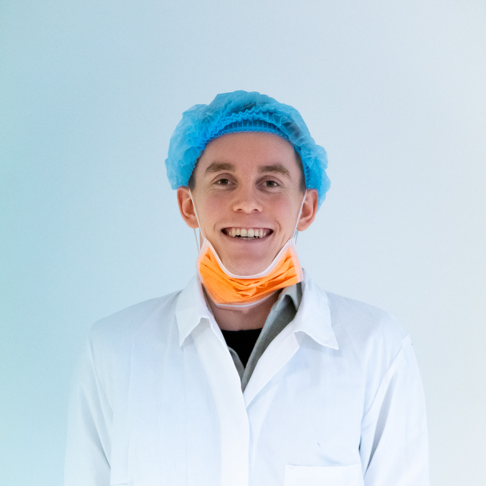

HAR DU TANNPROBLEMER? VI HJELPER DEG!
Vi på Gjømo tannklinikk har lang erfaring og svært gode resultater. Vår oralkirurg, Øyvind Strand, behersker alle typer av kirurgiske teknikker inklusive Nobel guide.
Vi holder til i Trondheim sentrum med umiddelbar nærhet til torget.
Våre priser ligger er svært konkurransedyktige. Hos oss får du gjort hele behandlingen på ett sted. Vår Kjeveortoped, Markus Pettrém, har satt mer enn 40 000 implantater, noe som sannsynligvis er verdensrekord.
Greger Gahre har jobbet med implantatprotetikk i mer enn 15 år. Hos oss benyttes kun anerkjente implantatsystemer.
Vi tilbyr en gratis og uforpliktende første konsultasjon til alle pasienter som ønsker implantatbehandling.
Fyll ut skjemaet ved å trykke på ikonet i nedre høyre hjørne, så kontakter vi deg omgående.
Vi setter vår ære i å hjelpe pasienter som har krav på trygderefusjon. Vi har direkte oppgjør med NAV på hele implantatbehandlingen.
Vi holder til i Trondheim sentrum med umiddelbar nærhet til torget.
Våre priser ligger er svært konkurransedyktige. Hos oss får du gjort hele behandlingen på ett sted. Vår Kjeveortoped, Markus Pettrém, har satt mer enn 40 000 implantater, noe som sannsynligvis er verdensrekord.
Greger Gahre har jobbet med implantatprotetikk i mer enn 15 år. Hos oss benyttes kun anerkjente implantatsystemer.
Vi tilbyr en gratis og uforpliktende første konsultasjon til alle pasienter som ønsker implantatbehandling.
Fyll ut skjemaet ved å trykke på ikonet i nedre høyre hjørne, så kontakter vi deg omgående.
Vi setter vår ære i å hjelpe pasienter som har krav på trygderefusjon. Vi har direkte oppgjør med NAV på hele implantatbehandlingen.
VÅRE ANSATTE

Greger Gahre
Tannhelsesekretær

Jonas Selvikvåg
Tannlege

Øyvind Strand
Oralkiriug

Markus Pettrém
Kjeveortoped